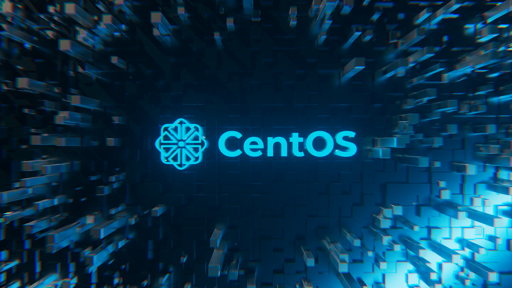
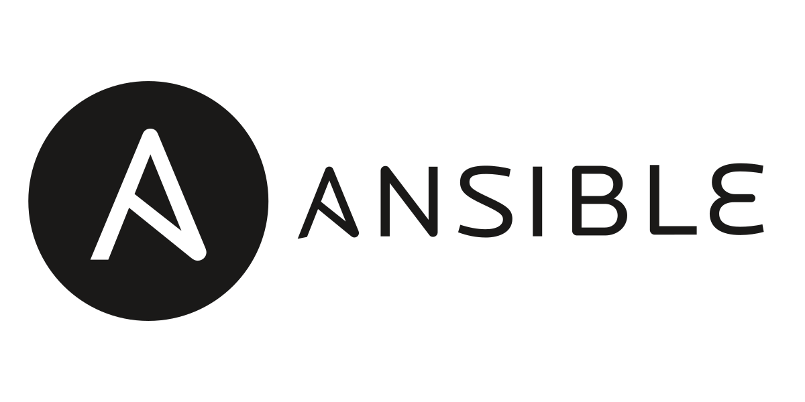
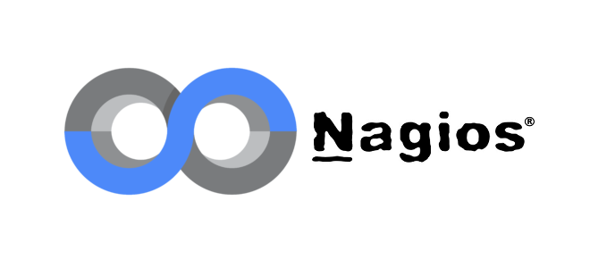
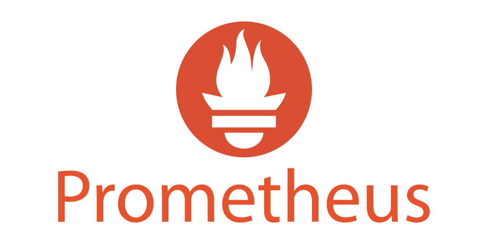
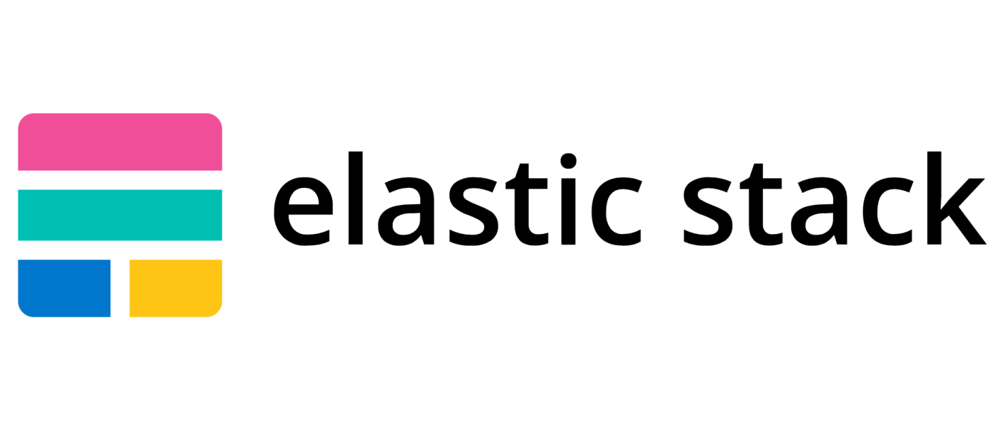
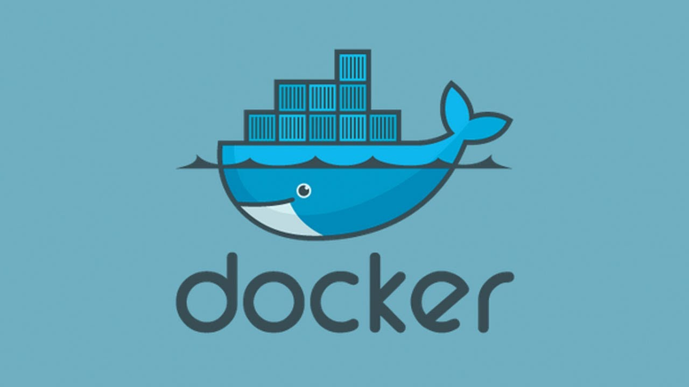

System Administration
MANAGING ENTERPRISE SERVERS
This course focuses on managing enterprise servers with a DevOps culture. In this course, students learn the essentials of running a DevOps environment in Linux servers, configuring and managing services, and how to monitor and leverage alerting in the DevOps environment by using de facto standard monitoring practices and Ansible as its configuration management; the student will also learn how to collaborate using Git and use Immutable environment using Containerized technologies, and cloud services. This course is also designed to mirror the current real-world scenarios we have and how to solve them. The course aims to provide students with the knowledge of managing enterprise servers in a DevOps environment. It includes using a common repository and configuring and managing using Ansible, with knowledge of key components to monitor the resources, using containerization technology to create an immutable infrastructure, and applying this knowledge in cloud services.

Hands-on Activity 2
SSH Key-Based Authentication and Setting up Git

Hands-on Activity 3
Install SSH server on CentOS or RHEL 8

Hands-on Activity 4
Running Elevated Ad hoc Commands
Hands-on Activity 5
Consolidating Playbook Plays
Hands-on Activity 6
Targeting Specific Nodes and Managing Services
Hands-on Activity 7
Managing Files and Creating Roles in Ansible

Hands-on Activity 8
Install, Configure, and Manage Availability Monitoring Tools

Hands-on Activity 9
Install, Configure, and Manage Performance Monitoring tools

Hands-on Activity 10
Install, Configure, and Manage Log Monitoring tools
Hands-on Activity 11
Containerization

Hands-on Activity 12
Build a Sample Web App in a Docker Container

Hands-on Activity 13
OpenStack Prerequisite Installation
Hands-on Activity 14
OpenStack Installation (Keystone, Glance, Nova)
Hands-on Activity 15
OpenStack Installation (Neutron, Horizon, Cinder)


FINAL PROJECT - CPE232
John Kennedy A. Aquino - CPE31S22